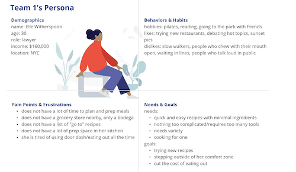

Gourmade
Overview
Members: Gabriella Boozer, Kasandra Duckett, Rachel Bell, Maura Jarman
Project title: Gourmade: Cooking App Case Study
Project description: Our goal is to create a cooking app that is personalized to each user. The user will fill out a short survey that allows the app to learn about their cooking habits, needs, likes, and dislikes. Afterwards, the app will generate the user a weekly meal plan complete with grocery list, schedule, cost breakdown, and videos. There will be a discover page that allows the user to gain inspiration and save recipes for future use. The idea is to remove the barriers to cooking at home and empower users to cook in a way that fits their lifestyle.

User-focused inspiration/motivation (why do you feel it is valuable?): We want to make cooking easier for users by taking the mental load off cooking. It can be difficult to fit menu planning, grocery shopping, and cooking into the work day. Our app would be your cooking assistant creating your grocery list and breaking down your cooking schedule. Bottom line, we want to make cooking easy and fun.
Shared software or tools group will use: Miro, Figma, Google Slides, Google Doc, Google Forms, Trello, Zoom, Canva
User Research Plan
Background: Cooking often requires lots of time, planning, skill, and energy. Due to people’s busy schedules, it can be difficult to prioritize cooking at home, leading to feelings of frustration and alternative forms of feeding oneself such as eating out.
Goals:
For users to have access to new recipes.
To help users cut the cost of eating out and ordering delivery.
To provide users with how-to cooking techniques with video clips.
Making good home cooking more accessible.
To provide easy and quick prep-timed meals.
To provide possible meals with ingredients users already have.
Research questions:
Who are our users? What’s their comfort level with technology?
What’s their comfort/experience level with cooking?
What space and kitchen equipment is accessible to them?
What do they feel like their current barriers are to cooking at home?
Where do they go or what services do they use when thinking about cooking at home?
Methodology:
5 User interviews will be conducted to collect qualitative data from participants. Use google forms to gather qualitative data from participants.
Participants:
Millennial/gen z young professionals
People who cook at least 1 meal every day